Systemy ogrodzeniowe, bramy z automatyką i kostka brukowa od jednego wykonawcy. Doradzimy, przywieziemy i ułożymy. Zobacz materiał na żywo w naszych ogrodach wystawowych.
Wieloletnia praktyka i zespół, który robi to na co dzień.
Materiał i układ dobieramy do budżetu, spadku terenu i stylu domu.
Prace prowadzimy zgodnie z ustalonym harmonogramem.
Przejrzysta kalkulacja i jasne warunki, zanim ruszymy.
Chcemy, by miejsca dla Państwa ważne były nie tylko funkcjonalne, ale przede wszystkim piękne. Dlatego produkty, które proponujemy, wyróżniają się bogactwem kształtów, kolorów i typów powierzchni.
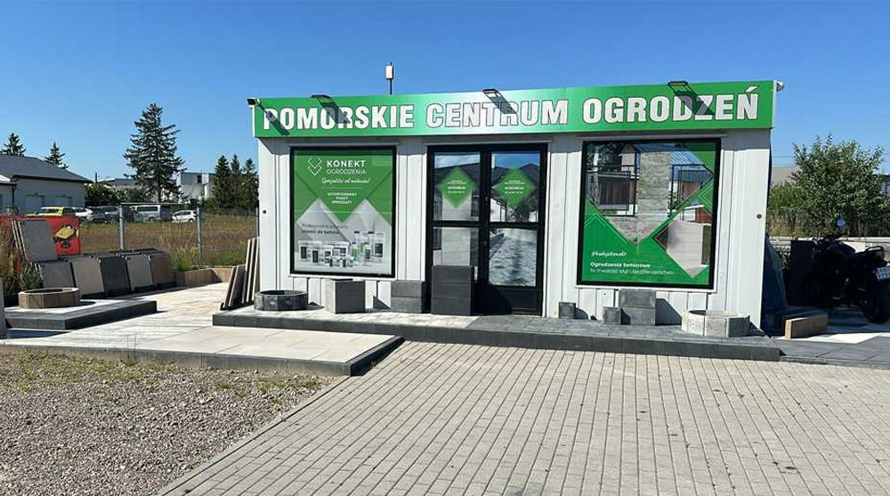
Od pojedynczego przęsła po kompletne zagospodarowanie działki. Wszystko z jednej ręki, z jedną odpowiedzialnością za efekt.

Ogrodzenia dobrane do stylu domu i ukształtowania terenu. Panele, beton architektoniczny, stal ocynkowana i malowana proszkowo albo lekkie aluminium.
Zobacz ofertę →
Podjazdy, tarasy, chodniki i parkingi. Pełen wybór wzorów, kolorów i formatów, od klasycznej kostki po duże płyty wielkoformatowe.
Zobacz ofertę →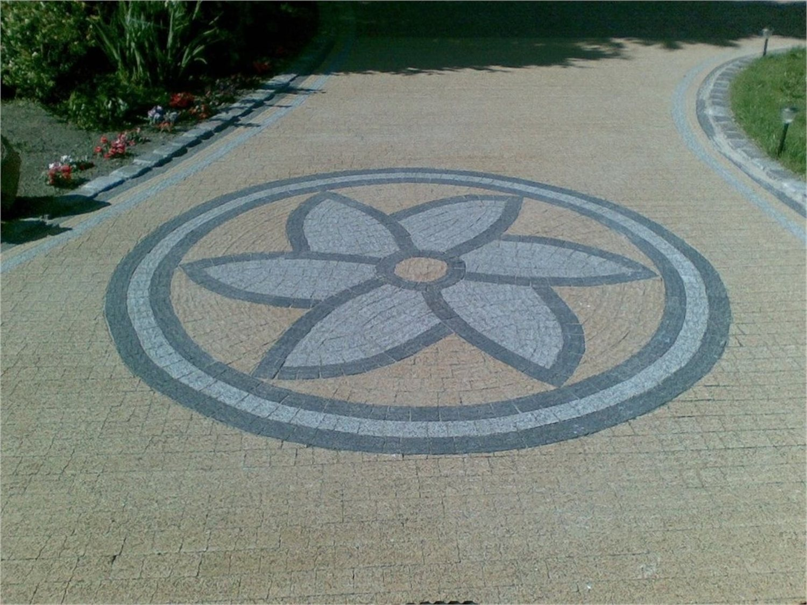
Zanim cokolwiek trafi na działkę, pokażemy jak to będzie wyglądać. Pomagamy dobrać wzór, kolor i rodzaj kostki do bryły budynku.
Zobacz ofertę →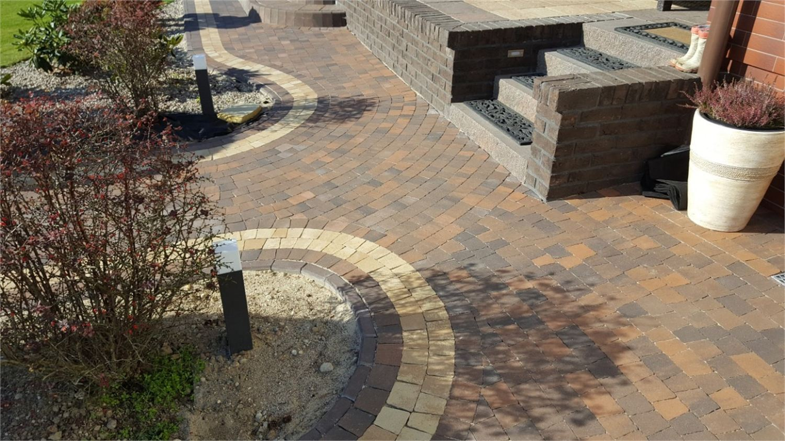
Wyrównanie terenu, zagęszczenie gruntu, przygotowanie podbudowy i układanie. Bez tego etapu nawet najlepsza kostka osiądzie.
Zobacz ofertę →Do większych zleceń przygotowujemy wizualizację działki. Widać na niej układ kostki, kolor, przebieg ścieżek i zieleń, więc decyzja o wzorze zapada przy stole, a nie w trakcie układania. Poniżej projekty, które powstały u nas przed wejściem ekipy na teren.
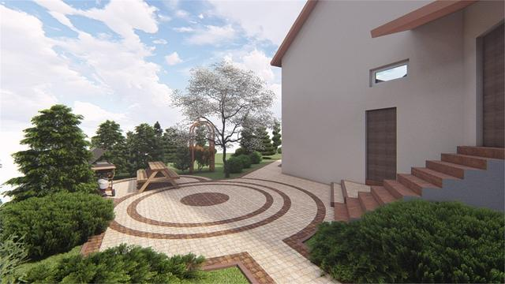
Wjazd i rabata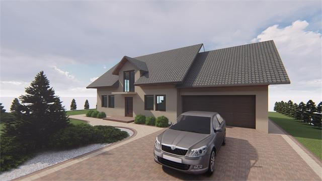
Podjazd do garażu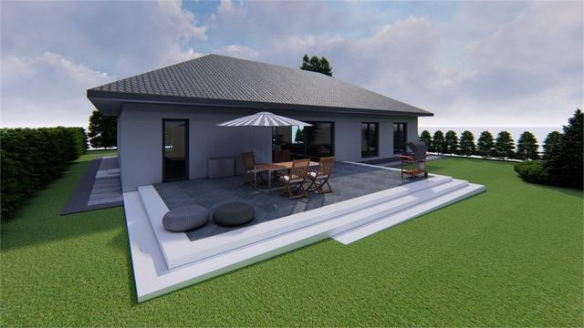
Taras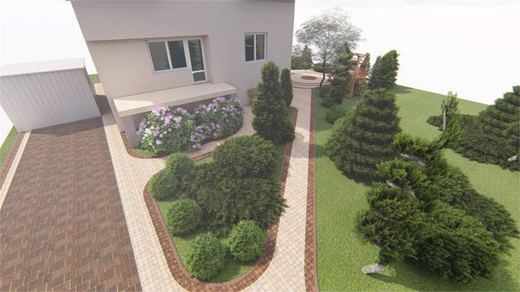
Ścieżki i zieleń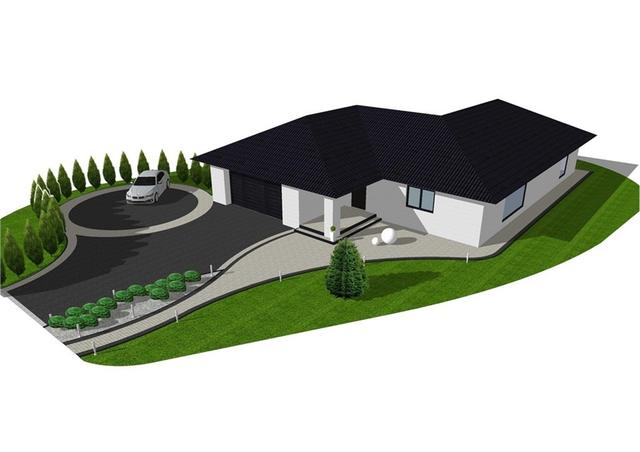
Plan działki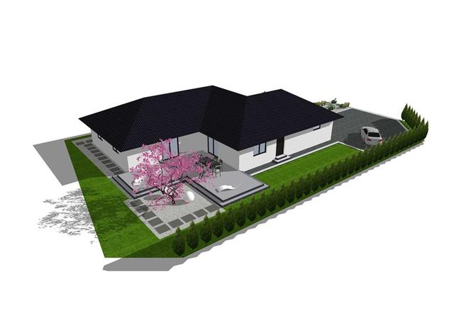
Wariant układuWzór kostki ogląda się inaczej na wydruku, inaczej na 30 metrach podjazdu. Wizualizacja kosztuje jeden wieczór pracy, poprawianie ułożonej nawierzchni kosztuje dużo więcej.
Ogrodzenia, bramy, podjazdy i tarasy z okolic Słupska i Kobylnicy. Kliknij zdjęcie, żeby zobaczyć w powiększeniu.
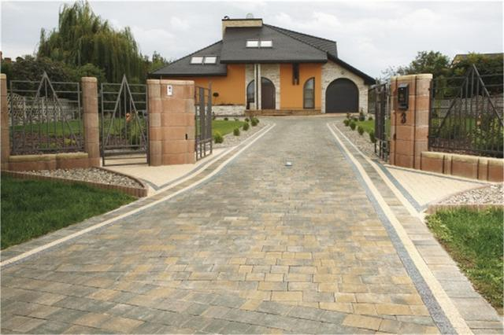
Podjazd z kostki prowadzący do domu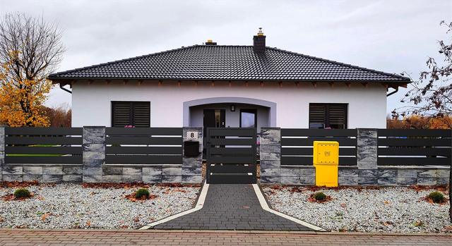
Ogrodzenie z betonu łupanego z przęsłami poziomymi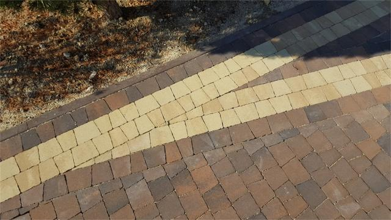
Detal wzoru z kostki w trzech odcieniach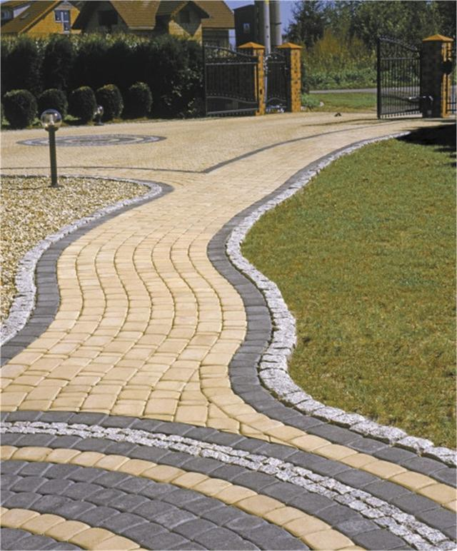
Ścieżka z kostki z falistym obramowaniem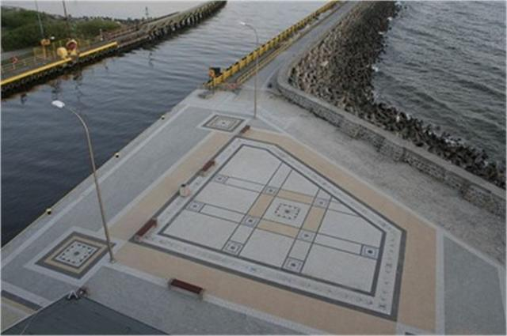
Nabrzeże z nawierzchnią z kostki i płyt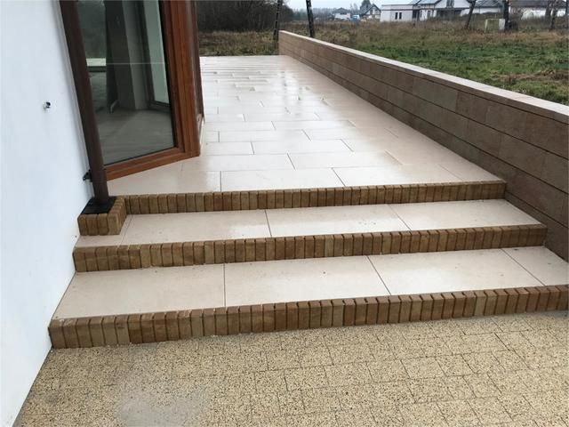
Schody i taras z płyt przy wejściu do domu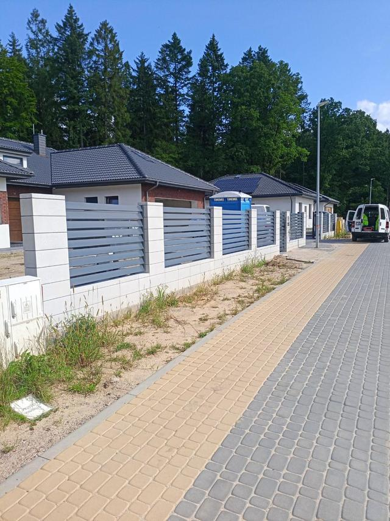
Białe słupki i przęsła poziome na nowym osiedlu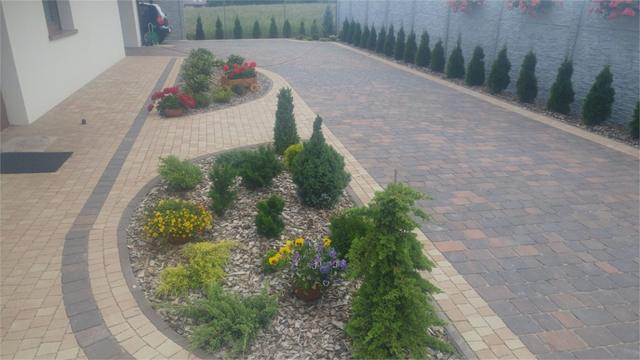
Podjazd z rabatą i obramowaniem z kostkiPoza podjazdami przy domach mamy na koncie place miejskie z ozdobnymi wzorami, ciągi pieszo-rowerowe, parkingi osiedlowe i nabrzeża. Tam nawierzchnia musi wytrzymać setki przejazdów dziennie, zimę i sól, więc podbudowę i odwodnienie robi się inaczej niż przy jednym wjeździe do garażu.

Kostka i ogrodzenie z katalogu wyglądają inaczej niż na działce. Dlatego prowadzimy dwa miejsca, w których wszystko można obejrzeć i dotknąć.
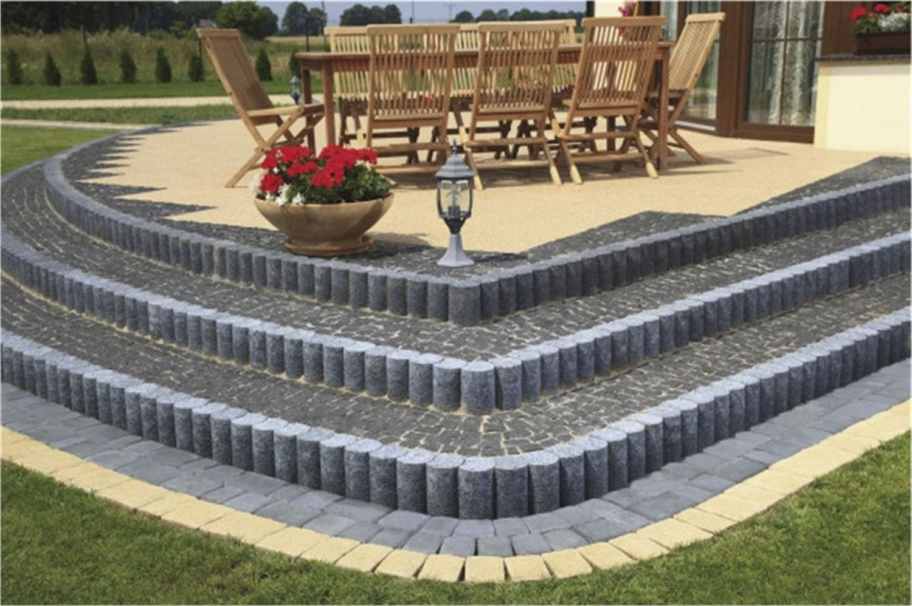
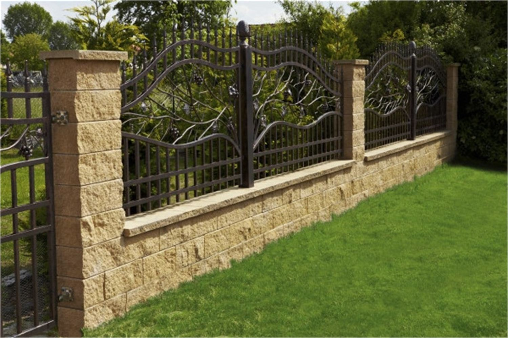


Dzwonią Państwo albo piszą na WhatsApp. Umawiamy się na działce, mierzymy i podpowiadamy, co się sprawdzi.
Pokazujemy materiał w ogrodzie wystawowym i przygotowujemy konkretną kalkulację z terminem.
Przywozimy materiał własnym transportem z HDS, robimy podbudowę i układamy albo montujemy ogrodzenie.
Sprawdzamy wszystko razem z Państwem, uprzątamy teren i przekazujemy gotową robotę.
Zamiast pisać wiadomość od zera, proszę zaznaczyć, co ma powstać. Przygotujemy gotową treść, którą wystarczy wysłać na WhatsApp.
Centrum Ogrodzeń w Słupsku odbiera w godzinach pracy. Jeden telefon zwykle wystarczy, żeby ustalić, czego szukamy i kiedy możemy przyjechać na pomiar.
+48 887 788 307Wystarczy telefon albo wiadomość na WhatsApp. Podpowiemy, ile mniej więcej to kosztuje, jeszcze zanim przyjedziemy na pomiar.
{kind=link}
{kind=link}
{kind=link}
{kind=link}
{kind=link}
{kind=link}
{kind=link}
{kind=link}
{kind=link}
{kind=link}
{kind=link}
{kind=link}
{kind=link}
{kind=link}